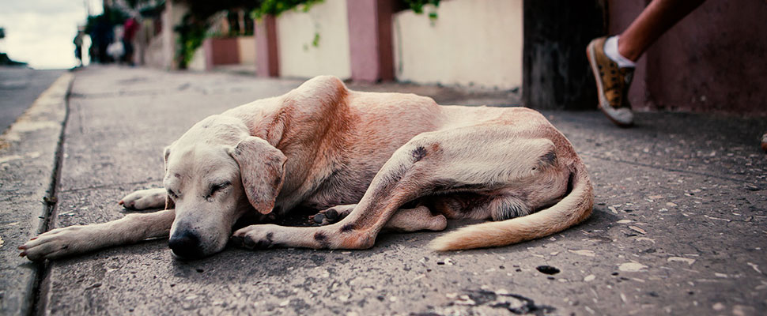
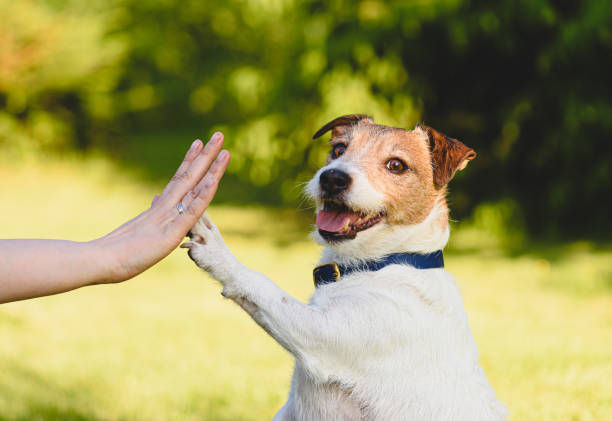

Sobre el maltrato Animal
El maltrato animal es una problemática social que afecta la vida de miles de seres sintientes día con día. No solo abarca la violencia física directa, sino también la falta de cuidados básicos, la indiferencia y el abandono. Proteger a los animales es una responsabilidad ética de todos para construir una comunidad más empática, segura y justa.

Cómo Ayudar
Hacer la diferencia está al alcance de todos mediante acciones diarias y responsables:
- Denuncia el abuso: Si presencias violencia o abandono, reporta el caso ante las autoridades de protección animal.
- Difunde y concientiza: Comparte información educativa sobre el respeto a la vida animal y la tenencia responsable.
- Adopción responsable: Elige adoptar en lugar de comprar. Dale una oportunidad a un animal rescatado.
- Hogar temporal y voluntariado: Dona tiempo, alimento o brinda espacio temporal en tu hogar.

¿Qué se considera maltrato animal?
Cualquier acción u omisión que cause dolor, sufrimiento o ponga en riesgo la vida de un animal:
- Maltrato físico: Golpes, quemaduras, mutilaciones o heridas infligidas intencionalmente.
- Negligencia y descuido: Privación de alimento, agua limpia, sombra o atención veterinaria.
- Abandono: Dejar animales en la vía pública, lotes baldíos o azoteas sin supervisión.
- Cautiverio extremo: Mantenerlos amarrados con cadenas cortas o en espacios insalubres.
- Explotación: Trabajos pesados, peleas clandestinas o reproducción desmedida.
¿Dónde acudir?
Si detectas un caso de maltrato o buscas apoyar organizaciones reales de protección animal, puedes acudir a:
Protección Animal Municipal
Atención a denuncias de maltrato, abandono y regulación de mascotas locales.
FGJ Tamaulipas (Denuncia Penal)
Módulo para denuncias penales por crueldad y actos graves de violencia animal.
Refugio Animal y Rescate A.C.
Rescate de animales, adopciones responsables y campañas de esterilización.
Atención mediante citas y eventos comunitarios
contacto@proteccionanimal.org